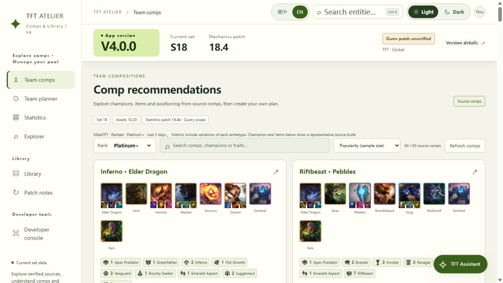

A school graduation project exploring source-backed TFT information retrieval and natural-language queries.
The locally run prototype includes team compositions, champion and item statistics, combination filters, a reference library, illustrated patch notes and an AI assistant. It supports Chinese and English.
This page provides project information for review. It is not a hosted deployment of the assistant. Running the application requires local setup and a user-provided chat model API key.

Some current statistics use attributed third-party aggregated data. Planned official Riot API integration will support completed-match analysis and further academic investigation of strategy assessment and post-match recommendations. Final placement alone is not treated as evidence that every decision was correct.
The prototype does not automate gameplay or read hidden live-game information.
GitHub repository, architecture and English setup instructions
This is an independent student project and is not an official Riot Games product.